CRVI002539Eduard Josef Wimmer-Wisgrill - Fashion design for the Wiener Werkstätte

CRVI002540Eduard Josef Wimmer-Wisgrill - Costume design
1916
1916
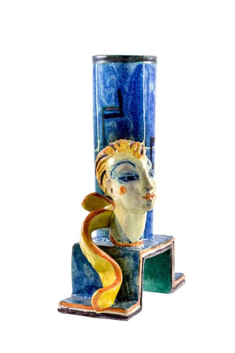
CRVI002545Gudrun Baudisch - Ceramic lamp stand
1928
1928
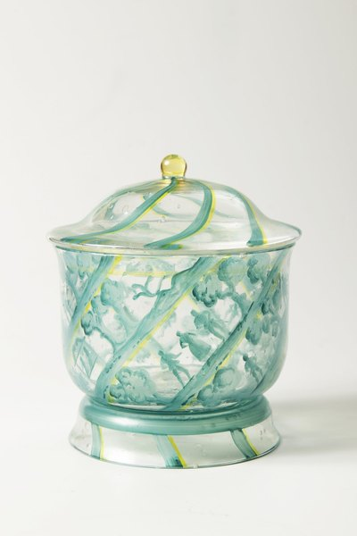
CRVI002547Mathilde Flögl - A Glass Box

CRVI002541Michael Powolny - Frühling (Spring), from The Four Seasons
1907
1907
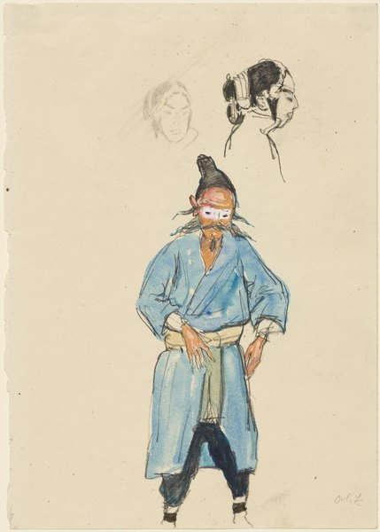
CRVI002641Emil Orlik - Chinese Actor and Two Sketches of a Woman's Head
1912
1912

CRVI002535Koloman Moser - Ein moderner Tantalus. Illustration für 'Meggendorfer Blätter'
1895
1895
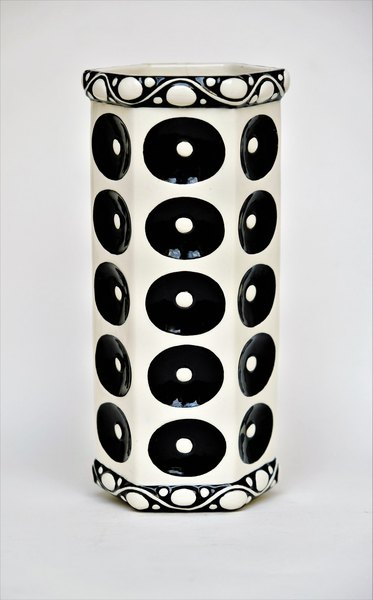
CRVI002544Vereinigte Wiener und Gmundner Keramik - Vase, model number 1084
1918
1918
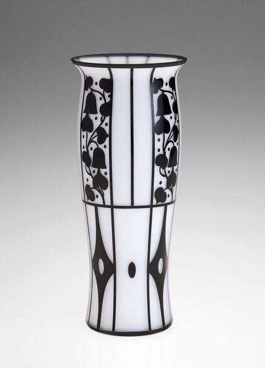
CRVI002534Josef Hoffmann - Cameo glass vase
1911
1911
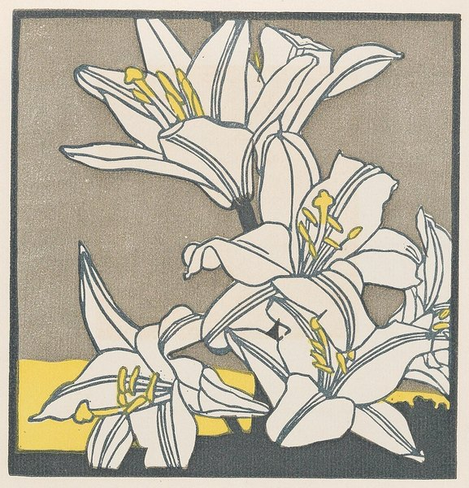
CRVI002645Leopold Stolba - Holzschnitt, Ver Sacrum 1903, S. 279
1903
1903

CRVI001031Adrian Ghenie - Weltwehmut
Albertina, Vienna · Infinitart Foundation · 2024
Albertina, Vienna · Infinitart Foundation · 2024
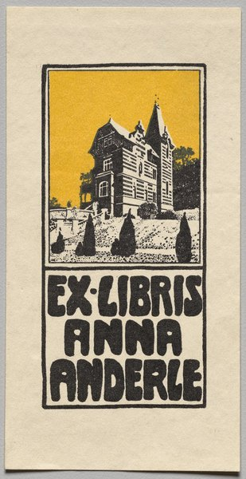
CRVI002629Alfred Roller - Bookplate: Anna Anderle

CRVI002548Felice Rix-Ueno - Gespinst
1924
1924

CRVI002537Koloman Moser - Ver Sacrum, poster for the XIII Secession exhibition
1902
1902

CRVI002626Koloman Moser - Secession: V. Kunstausstellung
1899
1899
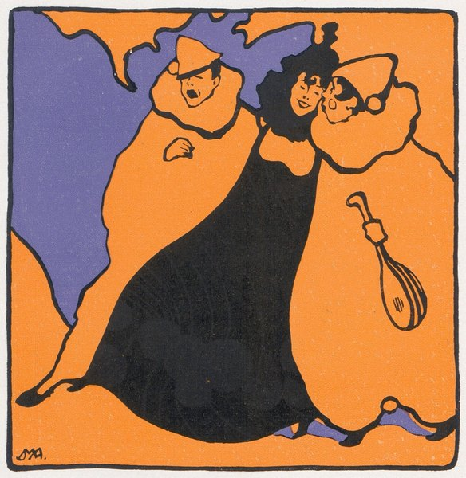
CRVI002638Josef Maria Auchentaller - Studie zu einem Placat in 3 Farben

CRVI002630Alfred Roller - Sketch to a Poster (Belbif Fahrrad)
1898
1898

CRVI002536Koloman Moser - Stoffentwurf „Abimelech" für Backhausen
1899
1899

CRVI002631Alfred Roller - Illustration to a Poem by Arno Holz
1898
1898
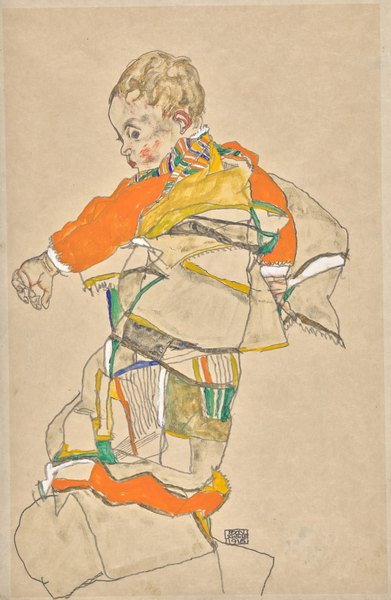
CRVI002647Egon Schiele - Portrait of a Child (Anton Peschka Jr.)
1916
1916
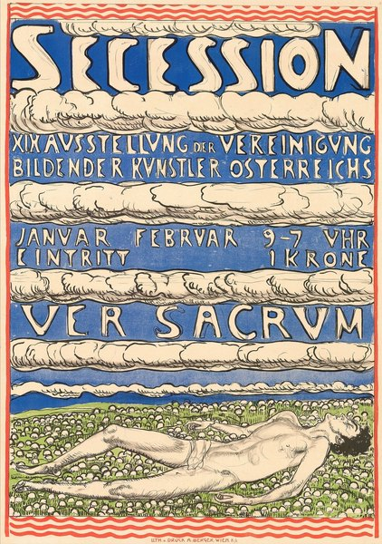
CRVI002640Ferdinand Hodler - Secession XIX. Ausstellung
1904
1904
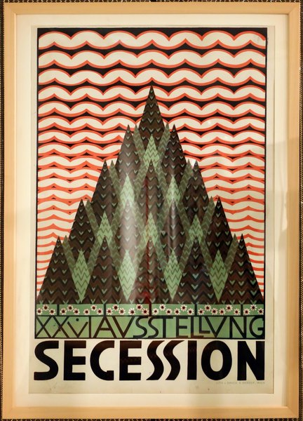
CRVI002639Ferdinand Andri - XXVI. Ausstellung Secession
1906
1906

CRVI002627Koloman Moser - Plakatentwurf für Ver Sacrum. Erste Grosse Kunstausstellung
1897
1897
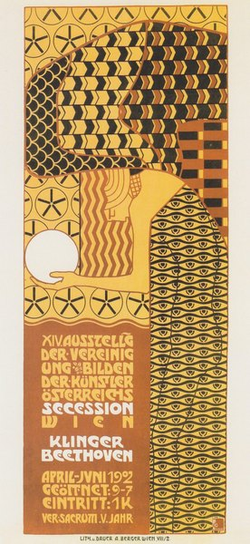
CRVI002632Alfred Roller - Plakat für die XIV. Ausstellung der Secession
1902
1902

CRVI002538Carl Otto Czeschka - New Year's Card, Wiener Werkstätte postcard No. 252
1909
1909

CRVI002542Berthold Löffler - Kunstschau Wien 1908
1908
1908
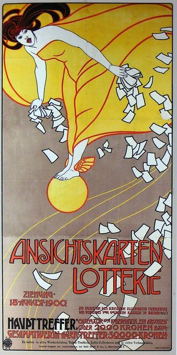
CRVI002637Josef Maria Auchentaller - Ansichtskarten-Lotterie
1900
1900

CRVI002546Maria Likarz-Strauss - Prosit Neujahr, Wiener Werkstätte postcard No. 744

CRVI002646Joseph Maria Olbrich - Plakat für die II. Ausstellung der Wiener Secession
1898
1898

CRVI002642Maximilian Kurzweil - Der Polster (The Cushion)
1903
1903
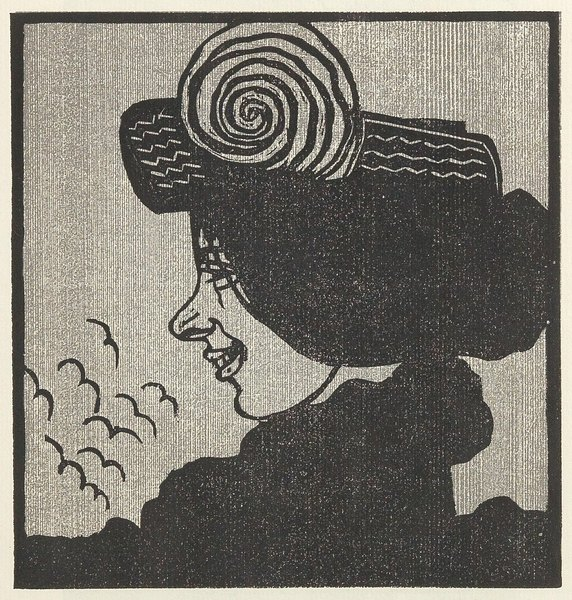
CRVI002644Leopold Stolba - Holzschnitt, Ver Sacrum 1903, S. 281
1903
1903

CRVI002625Koloman Moser - Reproduktionsvorlage für das Blatt Liebe für Gerlachs Allegorien. Neue Folge, Taf. 35
1895
1895
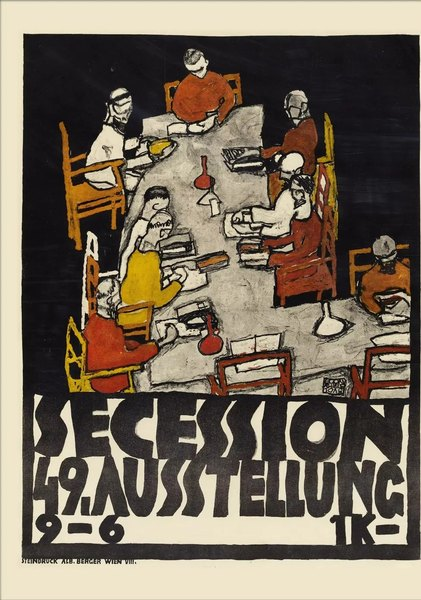
CRVI002648Egon Schiele - Secession 49. Ausstellung
1918
1918

CRVI002624Koloman Moser - Pietà
1895
1895

CRVI002643Wilhelm List - Selbstporträt
1889
1889